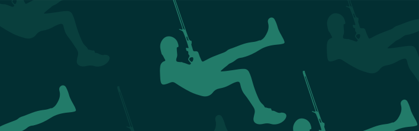
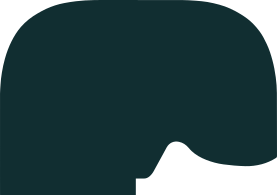
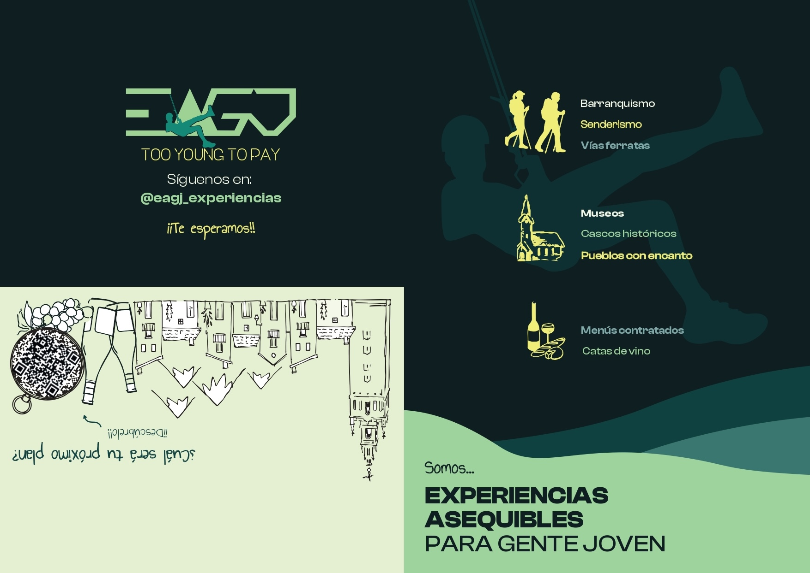
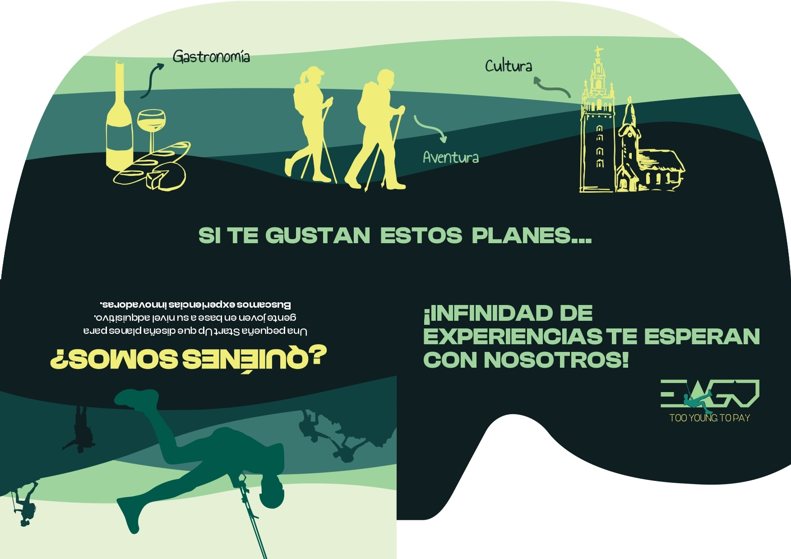
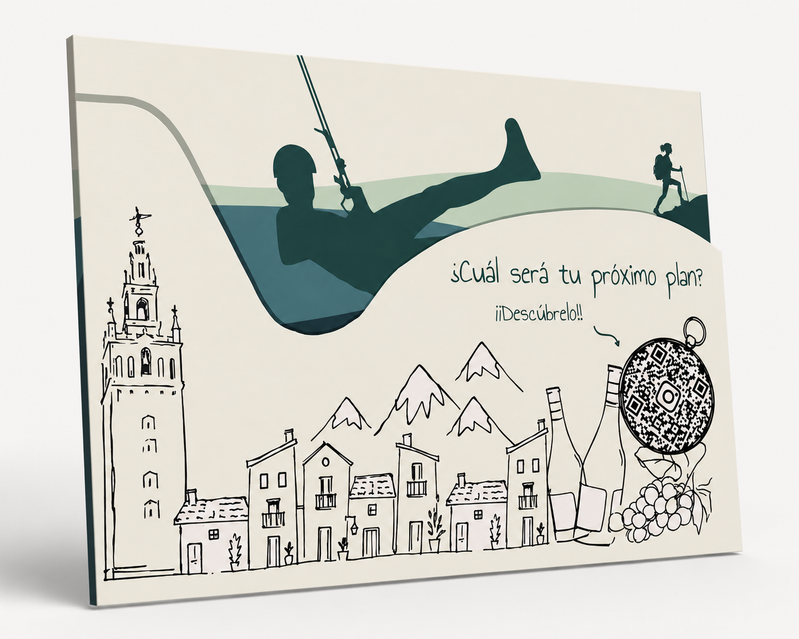

Experiencias Asequibles
para Gente Joven
Diseño de folleto para estrategia de buzoneo
↓¿Cómo fue el proyecto?
Proyecto ganador en el marco del Máster en Diseño Gráfico y Desarrollo Web UX/UI de la Cámara de Comercio de Sevilla de diseño de folleto para estrategia de buzoneo para el cliente real EAGJ Too Young To Pay.
Diseño Folleto
(Recorte + Diseño)




El proyecto presentó bastantes dificultades en un principio, pero a medida que iba haciendo versiones, más concreto y limpio surgía el diseño. Sin duda fue un gran reto y fue muy gratificante el resultado.